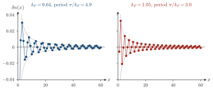

Page 9 of 15 of this session
9.6b Friedel oscillations in a chain, and the contrast with an insulator
What does the Friedel oscillation look like in a chain, and what changes when the chain has a gap? In a metallic chain the density oscillates with the period \(\pi/k_F\) under an envelope \(1/x\). With a gap the change of the density decays as \(e^{-x/\xi}\) instead, over a length \(\xi\) that is set by the gap.
\[\delta n(x) \;\xrightarrow{|x|\to\infty}\; A(v_0)\, \frac{\cos\!\big(2k_F |x| + \varphi_0\big)}{|x|^{\,d}} \qquad (d = 1,2,3). \tag{9.9}\]
This is the Friedel oscillation of Section 9.6a, the change of the density at a distance \(|x|\) from one impurity in a metal of dimension \(d\). It comes from the singularity of \(\chi_0(q)\) at \(q=2k_F\), and the amplitude \(A(v_0)\) and the phase \(\varphi_0\) depend on the impurity.
For a concrete example, let us take a one-dimensional tight-binding chain with an impurity at site \(0\). The local density of states oscillates around the impurity with wavelength \(\pi/k_F\), which is half of the Fermi wavelength \(\lambda_F=2\pi/k_F\), since the modulation is set by \(2k_F\) and not by \(k_F\). If we raise the chemical potential, \(k_F^{-1}\) becomes shorter and the oscillation becomes faster in the same way. The same phenomenon, with the same physical content, appears in a two-dimensional square lattice. This real-space LDOS modulation around impurities is what an STM measures in practice, and it is quasiparticle interference again, seen this time in real space and not in reciprocal space. In Schematic 9.11 we see the density along the chain at two fillings, and the oscillation is faster for the larger \(k_F\). The same is seen in two dimensions in Schematic 9.10 of the first part.
As a complementary check, the notebook also shows the insulating case. An impurity placed in a gapped 1D chain changes the LDOS at the energies inside the gap, such as \(E=0\) of the notebook, and there the change decays exponentially. In a metallic chain the LDOS at the Fermi energy instead keeps oscillating with the period \(\pi/k_F\) far from the impurity. This is a first view of the diagnostic that separates gapped and gapless systems, which we will make fully general in Section 9.9 and draw in Figure 9.5.
One impurity changes the density of a chain in two different ways, without and with a gap,
\[\delta n(x)\sim\frac{\cos(2k_Fx)}{x}\quad\text{(metal)},\qquad\qquad \delta n(x)\sim e^{-x/\xi}\quad\text{(gap)}.\]
The decay law tells whether there is a Fermi surface. A power law needs the singularity of \(\chi_0(q)\) at \(2k_F\), and a gap gives an exponential, whose length \(\xi\) grows as the gap closes.
The steps Why a gap gives an exponential
Let us start with the simplest function that has no singularity on the real axis, \(f(q)=1/(q^2+\kappa^2)\) with \(\kappa>0\). For \(x>0\) we close the integration contour in the upper half plane, where the only pole is at \(q=i\kappa\), with the residue \(e^{-\kappa x}/(2i\kappa)\), so
\[\int_{-\infty}^{\infty}\frac{dq}{2\pi}\,\frac{e^{iqx}}{q^2+\kappa^2}=\frac{e^{-\kappa|x|}}{2\kappa}.\]
The decay rate \(\kappa\) is the distance of the pole from the real axis.
In a chain with a gap, the Fermi level sits in the gap, and the Lindhard sum only joins a state of a filled band to a state of an empty band. Each energy denominator is then at least the gap \(E_g\) and never vanishes, so \(\chi_0(q)\) stays analytic when \(q\) gets a small imaginary part. We call \(1/\xi\) the half width of the strip \(|\mathrm{Im}\,q|<1/\xi\) where this holds. For any \(\kappa'<1/\xi\) we can move the integration line from the real axis to \(\mathrm{Im}\,q=\kappa'\), which gives
\[\left|\int\frac{dq}{2\pi}\,e^{iqx}\,\chi_0(q)\right|\le e^{-\kappa'x}\int\frac{dq}{2\pi}\,\big|\chi_0(q+i\kappa')\big| .\]
So the density change decays at least as \(e^{-\kappa'x}\) for every \(\kappa'<1/\xi\), meaning that it decays as \(e^{-x/\xi}\), up to a slower factor in front. In a metal the logarithm at \(q=2k_F\) sits on the real axis, so the line cannot be moved, and the transform decays only as a power.
As an example, we take the chain with the hopping \(t\) and the onsite energies \(+m\) and \(-m\) on the two sublattices, which has the gap \(E_g=2m\) at half filling. Here \(1/\xi=2\,\mathrm{asinh}(m/2t)\), which is close to \(m/t\) for a small gap. This is \(E_g/\hbar v_F\), with the Fermi velocity \(v_F=2ta/\hbar\) of the chain without the gap and the lattice constant \(a=1\), so \(\xi\) grows as the gap closes. For \(m=0.3t\) this gives \(\xi=3.3\) sites. We put one impurity of \(0.1t\) in this chain and compute the density by exact diagonalization. From \(x=10\) to \(x=20\), and from \(x=11\) to \(x=21\), it falls by a factor between \(21\) and \(29\), on either sublattice. This is a little more than \(e^{10/\xi}=20\), because of the slower factor in front.

In a chain with a gap, the density change around an impurity decays as \(e^{-x/\xi}\). Why is there no slowly decaying oscillation?
Show the answers
- A. ✗ False
This is false. A metal screens the impurity well, and it still has Friedel oscillations at \(2k_F\). Screening does not remove the tail, and in the gap there are no electrons at the Fermi level to screen.
- B. ✓ True
This is true. A gap makes \(\chi_0(q)\) analytic for all \(q\), so its Fourier transform decays as \(e^{-x/\xi}\). For \(\xi\approx2.5\) sites the response at ten sites is \(e^{-4}\approx0.02\) of its starting value.
- C. ✗ False
This is false. A dimerized chain with hoppings \(t_1\neq t_2\) is gapped and has translational symmetry with a two-site cell. Its density change around an impurity still decays exponentially. For \(t_1=t\), \(t_2=0.6t\) and an impurity of \(0.1t\), beyond ten sites it falls by more than a factor \(100\) every ten sites.
One impurity sits in a chain with a gap. How does the envelope of the density change \(\delta n(x)\) fall far from it?
Show the answers
- A. ✓ True
This is true. With the Fermi level in the gap, \(\chi_0(q)\) has no singularity, and its Fourier transform decays exponentially. In a chain with the onsite energies \(\pm0.3t\), which has the gap \(0.6t\), an impurity of \(0.1t\) gives a \(\delta n\) that falls by more than a factor \(20\) from \(x=10\) to \(x=20\).
- B. ✗ False
This is false. This is the envelope of a metallic chain, where the two Fermi points give the singularity at \(2k_F\). In the chain with the gap \(0.6t\), \(\delta n\) falls by more than a factor \(20\) from \(x=10\) to \(x=20\), while \(1/x\) gives \(2\).
- C. ✗ False
This is false. A power law needs a singularity of \(\chi_0(q)\), so a Fermi surface, and \(1/x^2\) is the envelope of a metal in two dimensions. The chain with the gap \(0.6t\) gives more than a factor \(20\) from \(x=10\) to \(x=20\), while \(1/x^2\) gives \(4\).
In a chain with a gap the response to one impurity decays as \(e^{-x/\xi}\), with \(\xi=2.5\) sites. In a metallic chain it decays as \(1/x\). For each of the two, at which distance \(x\) is the response below \(1\%\) of its value at \(x=1\)?
Solution
For the chain with the gap the ratio to the value at \(x=1\) is \(e^{-(x-1)/\xi}\). It equals \(0.01\) when
\[x-1=\xi\ln100=2.5\times4.61=11.5,\]
so below \(1\%\) beyond \(x\approx12.5\) sites. For the metal the ratio is \(1/x\), and it equals \(0.01\) at \(x=100\) sites. At \(x=15\) the exponential is at \(0.4\%\) of its value at \(x=1\), while the power law is still at \(7\%\).
This is why the decay law, and not the size of the response close to the impurity, tells a metal from an insulator. Over a few tens of sites the two laws differ by orders of magnitude, so a map of the density of this size is enough to tell them apart.
Try it. The cell uses mus = [1.95,1.7]. The Fermi level is close to the bottom of the band, so \(k_F\) is measured from the minimum. The ripples have a period of about 14 sites for 1.95 and about 5.7 sites for 1.7, which is \(\pi/k_F\). Replace 1.7 by 1.0 and check that the period becomes 3 sites.
Notebook check-in: session9.ipynb, “Impurity in a 1d metal” (Core), “Impurities in a 2d metal” (Core), and “Impurity in an electronic insulator” (Core)
Place a single impurity in a 1D chain, and then in a 2D square lattice, and look at how the LDOS oscillates as in (9.9). Change the chemical potential and check that the wavelength of the oscillation follows \(\pi/k_F\), as predicted. This is the clearest place in the whole session to see a response formula and a numerical experiment agree digit by digit. The third section repeats the exercise with the chemical potential inside a gap, instead of in a partially filled band. Check that the change of the LDOS now decays exponentially, over about \(10\) sites for the gap \(0.2\) and about \(3.3\) sites for the gap \(0.6\), without an oscillating tail that decays slowly. This is the contrast between gapped and gapless systems that Section 9.9 makes fully general.